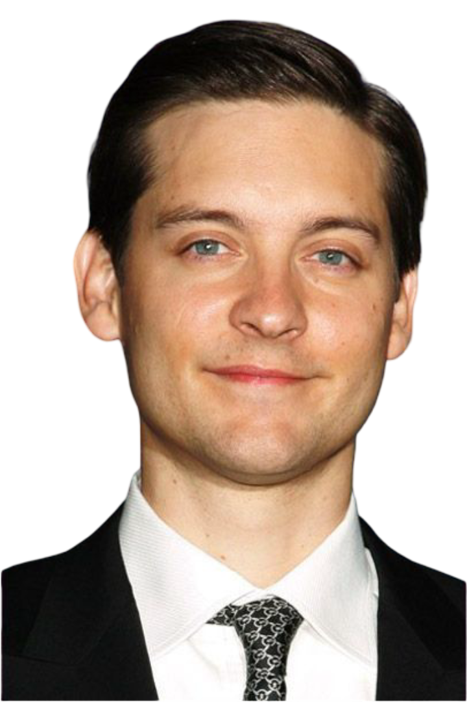
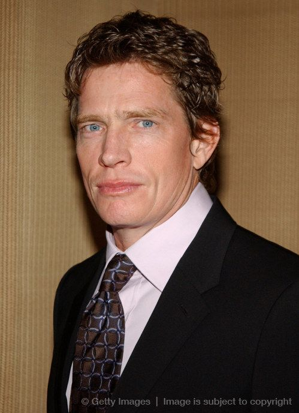
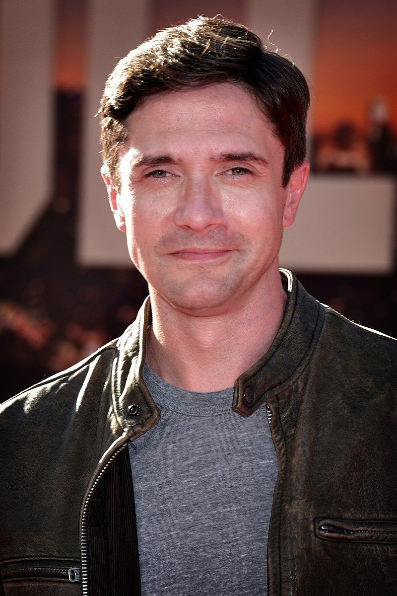
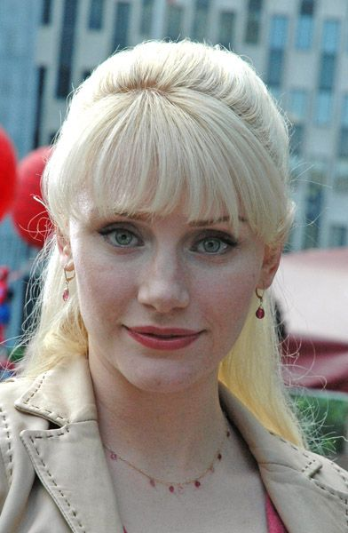

Elenco Principal






No aguardado desfecho da trilogia de Sam Raimi, Peter Parker enfrenta seus maiores desafios quando uma simbiote alienígena amplifica seus poderes e sua escuridão interior. Enquanto isso, três vilões ameaçam Nova York em uma batalha épica que testará os limites do herói amigo da vizinhança.
A vida finalmente está dando certo para Peter Parker (Tobey Maguire). Ele está no auge de sua popularidade como o Homem-Aranha, seu relacionamento com Mary Jane Watson (Kirsten Dunst) está mais forte do que nunca, e Nova York o celebra como um verdadeiro herói.
Porém, essa felicidade é ameaçada quando um simbiote alienígena preto se funde com seu traje, criando uma versão mais poderosa e agressiva do herói. O simbiote amplifica as características negativas de Peter, transformando-o em um vigilante arrogante e perigoso.
Enquanto luta contra sua escuridão interior, Peter deve enfrentar três ameaças simultâneas: o vingativo Flint Marko (Thomas Haden Church), que ganhou poderes de controlar a areia após um acidente; o Novo Duende (James Franco), que busca vingança pela morte de seu pai; e Eddie Brock (Topher Grace), um fotógrafo rival que se funde com outro pedaço do simbiote para se tornar o perigoso Venom.
"Homem-Aranha 3" foi criticado por ter muitos vilões, o que dividiu a atenção da narrativa principal segundo alguns críticos.
A cena em que Peter dança na rua se tornou icônica, embora controversa, representando sua arrogância sob a influência do simbiote.
O filme teve uma produção conturbada, com a Sony insistindo na inclusão de Venom, contra a vontade do diretor Sam Raimi.
Apesar das críticas mistas, o filme arrecadou US$ 890 milhões mundialmente, tornando-se a maior bilheteria da trilogia original.